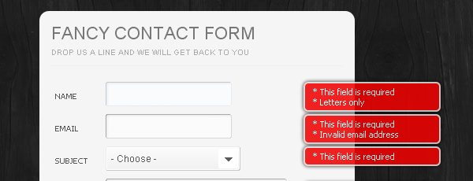

Formularze

<form></form> ramy formularza atrybuty: action method="post/get" autocomplete="on/off" novalidate="novalidate" <textarea><textarea> pole do wprowadzania tekstu atrybuty: rows="liczba_lini" cols="liczba kolumn" name="nazwa" <input /> znacznik do wysyłania przeróżnych danych atrybuty: alue="wartość" - wartość domyślna name="nazwa" - nazwa inputu readonly="readonly"- do odczytu disabled="disabled" - wyłączenie tabindex="liczba" ustala kolejność tabulacji accesskey="przycisk" - przechodzenie do pól za pomocą skrótów klawiszowych maxlenght="liczba" - maksymalna liczba wprowadzanych znaków size="liczba" - liczba widocznych znaków checked="checked"- wartość domyślna(pola wyboru) src="źródło pliku" placeholder="znak wodny" required=""required" - pole wymagane min="liczba" - wartość minimalna max="liczba" - wartość maksymalna accept="plik/rozszerzenie" -akceptacja plików Możliwości atrybutu type: submit - przycisk;text - pole tekstowe;password - hasło; tel - nr telefonu;email - email;url - strona; date - data;number - numer;range - suwak z liczbami; color - pole wyboru koloru;reset - przycisk resetu; checkbox - pole wyboru;radio - wykluczające pole wyboru; hidden - ukryty;button - przycisk(tak po prostu); image - obrazek file(przy form atrybuty method="post" enctype="multipart/form-data") <label></label> służy do łączenia inputów z tekstem <button></button> przycisk z dodatkowymi funkcjami <select></select> ramy pola listy <option></option> opcje pola listy <optgroup></optgroup> pole listy z grupami <fieldset></fieldset> ramka <legend></legend> nazwa ramki <datalist> lista podpowiedzi